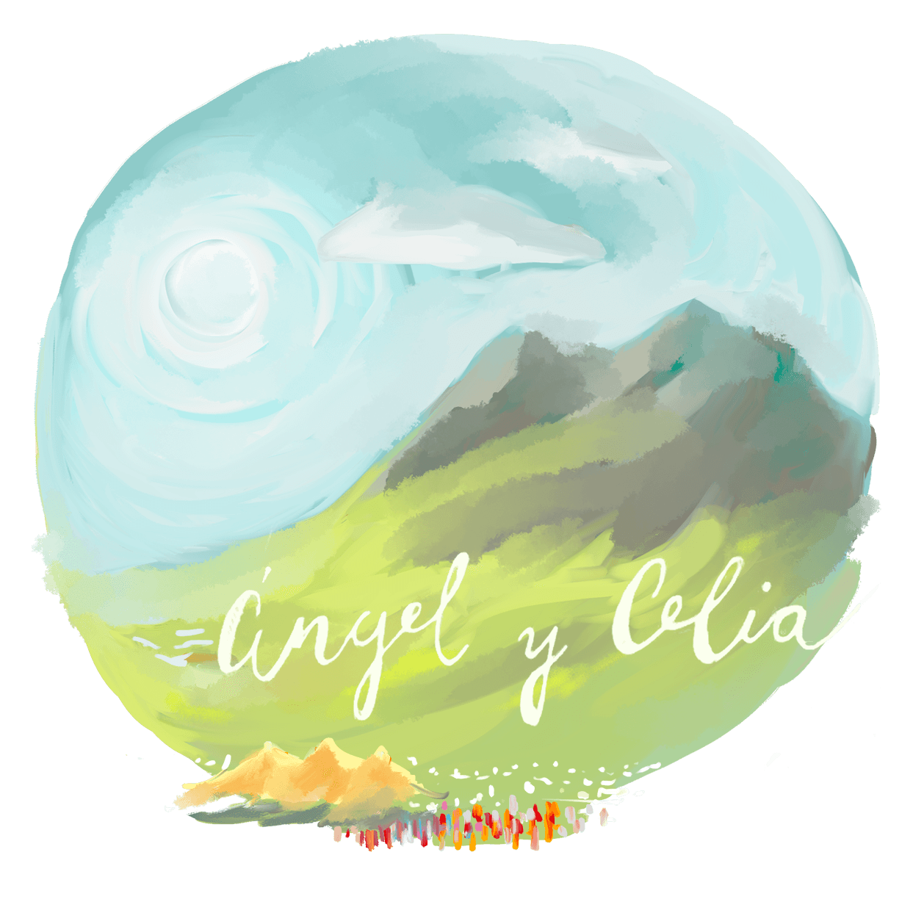

Sábado 23 de Agosto en Proaza, Asturias patria querida. Alrededor de mediodía. Hora exacta a definir.
Saturday, August 23rd in Proaza, Asturias. Around noon. Exact time to be defined.

On the 23rd, transportation will be provided from Oviedo. The only defined stop is the Alfonso II Institute.
¡Pulsa aquí para confirmar si necesitas autobús!Click here to confirm if you need a bus!
Otros transportes:Other Transportation:
Click for schedules
Click for schedules
Taxi Oviedo - Proaza - Oviedo approximately 40 euros per trip.
Taxi Airport - Proaza - Airport approximately 70 euros per trip.
Taxi Airport - Oviedo - Airport approximately 50 euros per trip.
Número teléfono taxi Proaza Kike: 683526937
Phone number for Proaza Kike taxi: 683526937
Número teléfono taxi Proaza Nedi: 671773776
Phone number for Proaza Nedi taxi: 671773776
Número teléfono taxis Oviedo : 985252500
Phone number for Oviedo taxis: 985252500
* En 2024 ampliaron horarios durante el verano. Si esto se repite en 2025, actualizaremos la información.
* In 2024, they extended the schedules during the summer. If this happens again in 2025, we will update the information.
IMPORTANTE: Este año hay vuelos directos Jerez-Oviedo.
IMPORTANT: This year there are direct flights from Jerez to Oviedo.
Si vienes en coche desde el sur recomendamos llegar hasta Oviedo por la autovía, tomar la A63 dirección Grado - La Espina y después la N634 dirección Trubia y continuar hasta Proaza.
If you come by car from the south, we recommend arriving in Oviedo via the highway, taking the A63 towards Grado - La Espina and then the N634 towards Trubia and continuing to Proaza.
In Oviedo, there are many accommodations with different prices and services.
In Proaza and its surroundings, there are also several accommodations:
Hotel Peñasjuntas (we don't know how it is)
El Sabil - Minimum 3 nights
Rural apartments of the bear - Minimum 6 nights
Bonalive (2km away) - minimum 7 nights
Casa Presentina - minimum 7 nights
Houses of María de Fallas - minimum 7 nights - 6 people
The tower, the bear houses - minimum 6 nights - for 5 people
Any rural house or hotel in nearby towns such as Aciera, Teverga, Barzana, Caranga, etc. may be fine if you don't drink or if you don't mind returning by taxi. Search in the area.
Para los menores de 60 años vestir el traje tradicional de su lugar de origen es obligatorio, este es el regalo. :-) ¡No es un disfraz, ni tu traje preferido, es un traje tradicional!
For those under 60, wearing the traditional costume of their place of origin is mandatory, this is the gift. :-) It's not a costume, nor your favorite suit, it's a traditional suit!
La celebración es para mayores de 16 años, ¡a excepción de aquellos bebés que necesiten de sus padres!
The celebration is for those over 16, except for those babies who need their parents!
La semana siguiente estaremos en Proaza, si te apetece alargar tu estancia, ¡allí estaremos!
The following week we will be in Proaza, if you want to extend your stay, we will be there!
Por favor, responde en el siguiente enlace para ayudarnos a preparar todo lo mejor posible:
Please respond to the following link to help us prepare everything as best as possible:
Confirma aquí tu asistenciaConfirm your attendance here